Полное руководство: как размещать заказы, откликаться на работу, вести чат с заказчиком, получать оплату и отзывы.
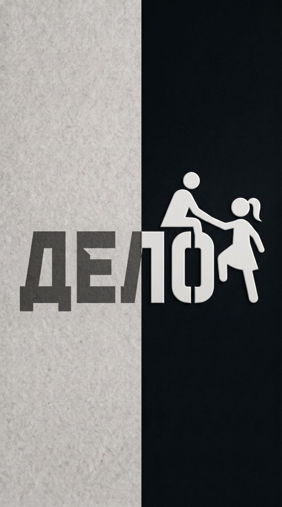
Версия 1.0 · Август 2026 Сайт: delo-jhcy.onrender.com
Сделай дело
ДЕЛО.О приложении
Что такое ДЕЛО.
ДЕЛО — это маркетплейс услуг: место, где заказчики находят исполнителей для любых задач, а специалисты получают заказы. Ремонт и уборка, дизайн и тексты, репетиторство и фото — 12 категорий, тысячи возможностей.
Две роли
Роль
Что делает
Заказчик
Публикует задания, выбирает исполнителя из откликов, оплачивает работу через безопасную сделку, оставляет отзыв.
Специалист
Находит задания в ленте, отправляет отклики со своей ценой и сроком, выполняет работу и получает рейтинг.
Роль выбирается при регистрации. Один аккаунт — одна роль.
Как это работает
1
Заказчик размещает заказ
Описание, бюджет, категория, город или удалённая работа.
2
Специалисты откликаются
Каждый предлагает свою цену и сроки выполнения.
3
Выбор исполнителя
Заказчик назначает одного — сумма резервируется на счёте.
4
Работа и чат
Все договорённости — во встроенном чате рабочего области.
5
Завершение и отзыв
Оплата уходит исполнителю, заказчик ставит оценку.
Совет Заполните профиль сразу после регистрации: имя, город, навыки и портфолио. Заказчики в первую очередь выбирают тех, о ком всё понятно.
ДЕЛО. Руководство пользователяСтр. 2
ДЕЛО.Начало работы
Регистрация и вход
Для полноценной работы нужен аккаунт. Просмотр ленты заказов доступен без регистрации.
Панель фильтров — категория, город, только удалённые заказы, сортировка.
Переключатель «Список / Карта» — заказы на карте города.
Сортировка
По умолчанию — как выдал сервер;
Бюджет: сначала дороже / дешевле;
Сначала новые / старые.
Совет Поиск срабатывает с небольшой задержкой после ввода — просто печатайте, страницу перезагружать не нужно.
ДЕЛО. Руководство пользователяСтр. 4
ДЕЛО.Лента заказов
Лента заказов
Каждый заказ — карточка со всей ключевой информацией: категория, статус, бюджет, город и срок.
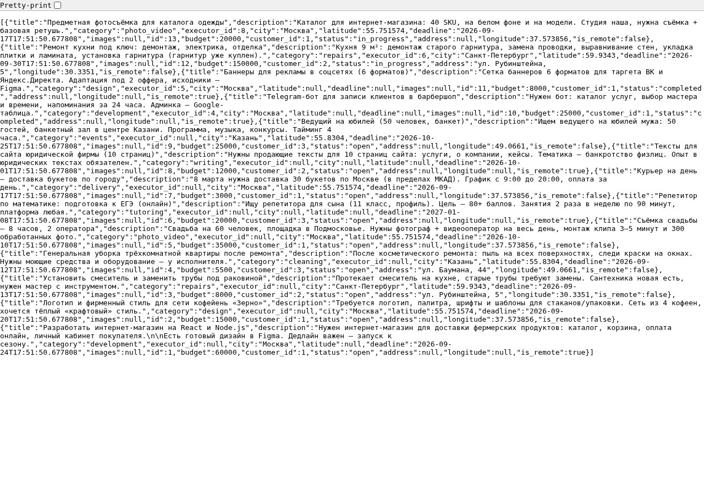
Лента заказов: карточки с бюджетом, городом и статусами
Статусы заказа
Статус
Что означает
Открыт
Принимаются отклики специалистов.
В работе
Исполнитель назначен, идёт выполнение.
Завершён
Работа выполнена и оплачена.
Что видно в карточке
Категория (чёрный штамп) и статус заказа;
Заголовок и краткое описание — кликните, чтобы открыть заказ целиком;
Бюджет крупным шрифтом, город или пометка «Удалённо», срок;
Фотографии задания, если заказчик их прикрепил.
Совет Если заказов по фильтрам не нашлось, лента покажет «Пока пусто» — попробуйте ослабить условия: выбрать «Все города» или убрать категорию.
ДЕЛО. Руководство пользователяСтр. 5
ДЕЛО.Для заказчика
Как разместить заказ
Кнопка «+ Создать заказ» доступна заказчику в верхней части ленты.
1
Нажмите «+ Создать заказ»
Откроется форма нового заказа.
2
Опишите задачу
Чёткий заголовок и подробное описание: что нужно сделать, какой результат хотите получить, особенности.
3
Укажите бюджет и категорию
Бюджет — ориентир для специалистов; категория помогает нужным людям найти заказ.
4
Место выполнения
Отметьте «Можно выполнить удалённо» или выберите город и укажите адрес.
5
Добавьте фото (до 5 штук)
Фото «до», примеры желаемого результата — повышают отклики в разы.
6
Нажмите «Создать заказ»
Заказ сразу появится в ленте и начнёт собирать отклики.
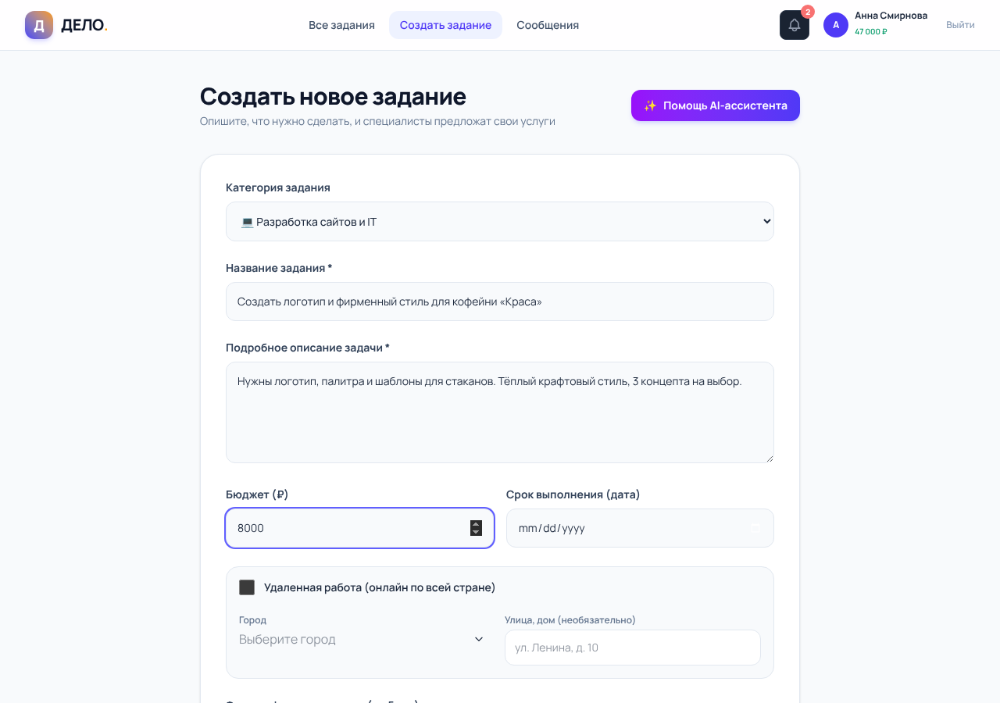
Заполненная форма: описание, бюджет 8000 ₽, категория «Дизайн», удалённая работа
ДЕЛО. Руководство пользователяСтр. 6
ДЕЛО.Заказ
Страница заказа
Кликните заголовок любого заказа — откроется его страница: полное описание, фото, карта и форма отклика.
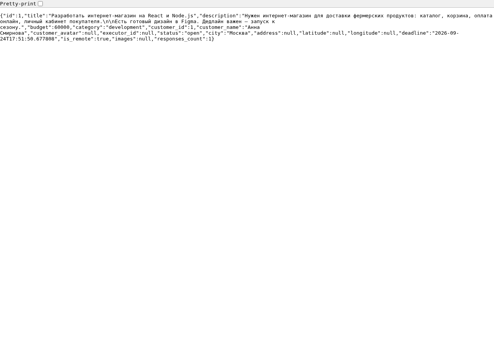
Страница заказа: бюджет, описание, карта района и заказчик
Что на странице
Категория, статус и количество откликов;
Бюджет и полное описание задачи;
Фотографии — клик открывает полноэкранный просмотр;
Карта с меткой, если указан адрес;
Карточка заказчика со ссылкой на его профиль.
Форма отклика
Внизу страницы заказа специалисты видят форму: сопроводительное письмо, своя цена и срок в днях.
Совет В письме ответьте на три вопроса: какой у вас опыт, как решите задачу и когда готовы приступить. Это резко повышает шансы.
ДЕЛО. Руководство пользователяСтр. 7
ДЕЛО.Для специалиста
Как откликнуться на заказ
Специалист может откликнуться двумя способами: кнопкой «Откликнуться» в карточке или через форму на странице заказа.
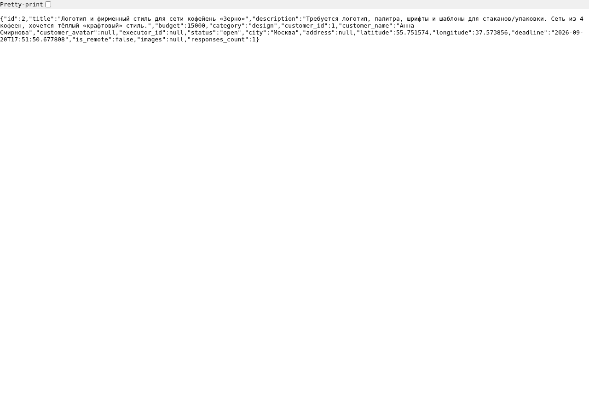
Заполненный отклик: письмо заказчику, цена 2800 ₽ и срок 1 день
Из чего состоит отклик
Письмо — коротко о вас и о том, как решите задачу;
Ваша цена — можно предложить бюджет заказчика или свой;
Срок — за сколько дней выполните.
Важно На один заказ можно отправить только один отклик. Обдумайте цену до отправки.
После отправки
Заказчик получит уведомление о вашем отклике;
Если выберут вас — придёт уведомление и откроется рабочий чат;
Следите за колокольчиком в шапке — там все события.
ДЕЛО. Руководство пользователяСтр. 8
ДЕЛО.Безопасная сделка
Выбор исполнителя
Когда отклики собраны, заказчик нажимает «Смотреть отклики» в карточке заказа и выбирает лучшего.
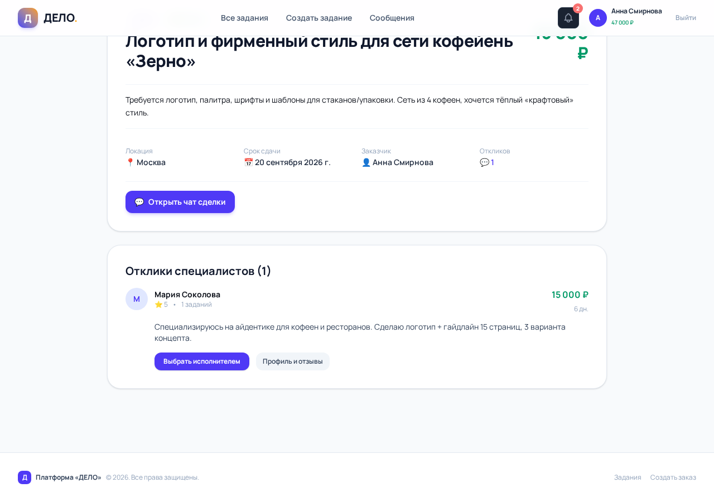
Отклики: имя специалиста, рейтинг, город, цена, срок и письмо
Как выбрать
1
Сравните отклики
Рейтинг, число выполненных заказов, цена и сроки.
2
Нажмите «Назначить»
Сумма заказа резервируется на вашем балансе.
3
Откройте чат
Кнопка «Перейти в чат» появится в карточке заказа.
Безопасная сделка
При назначении исполнителя бюджет заказа резервируется на счёте сервиса и хранится там до завершения работы. Исполнитель уверен, что оплата гарантирована, а заказчик — что деньги уйдут только за выполненную работу.
Важно Если на балансе недостаточно средств, система попросит пополнить счёт в профиле.
ДЕЛО. Руководство пользователяСтр. 9
ДЕЛО.Рабочая область
Чат с исполнителем
«Рабочая область» — чат заказа, доступный обеим сторонам после назначения исполнителя. Заказчик открывает его кнопкой «Перейти в чат», специалист — «Рабочая область».
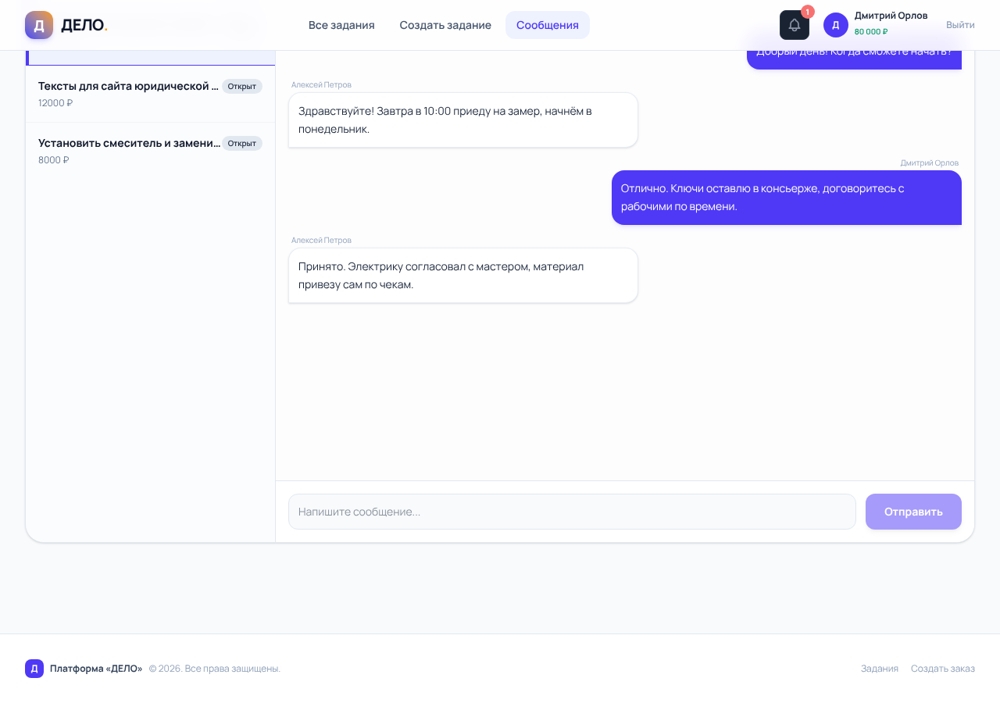
Рабочая область: сообщения доставляются мгновенно
Возможности чата
Сообщения доставляются мгновенно, без перезагрузки;
Свои сообщения — чёрные, собеседника — светлые;
Заказчик может завершить заказ прямо из чата;
История переписки сохраняется за заказом.
Уведомления
Колокольчик в шапке показывает число непрочитанных событий: новые отклики, назначение, сообщения, завершение и отзывы.
Совет Все договорённости (цена, сроки, детали) фиксируйте в чате — это история вашего заказа.
ДЕЛО. Руководство пользователяСтр. 10
ДЕЛО.Завершение
Завершение заказа и отзыв
Когда работа принята, заказчик нажимает «Завершить заказ» в чате, подтверждает решение и оценивает специалиста.
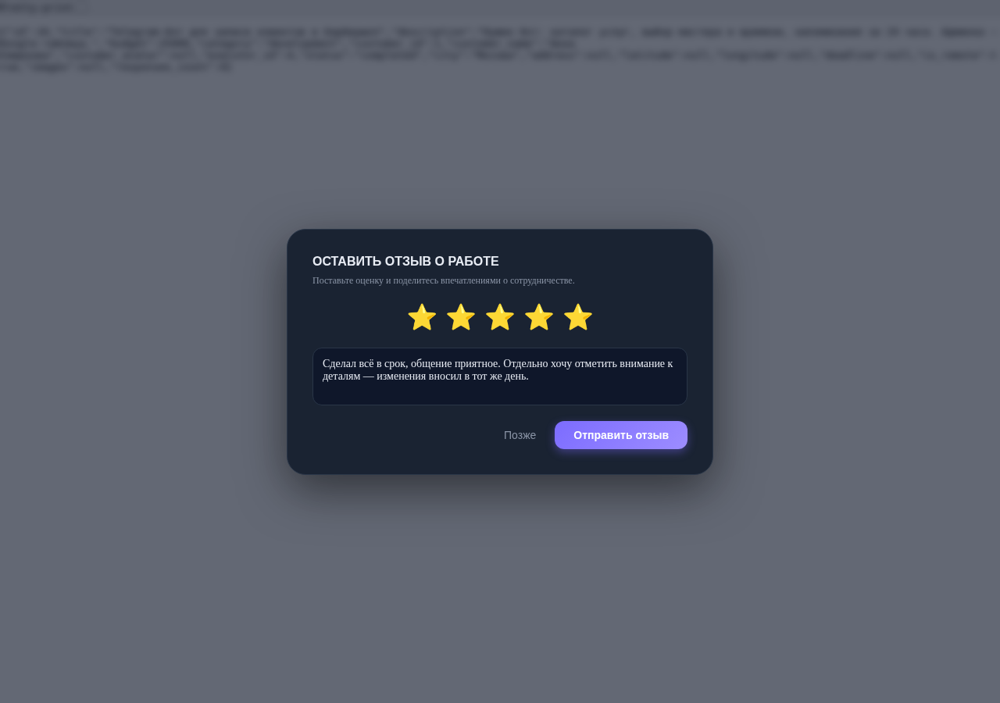
Оценка: выберите число звёзд и напишите пару слов о работе
Что происходит после
1
Оплата исполнителю
Зарезервированная сумма уходит на счёт специалиста.
2
Отзыв публикуется
Оценка и комментарий появятся в профиле специалиста.
3
Рейтинг пересчитывается
Средняя оценка по всем отзывам — на виду у заказчиков.
Публичный профиль
Профиль специалиста показывает рейтинг, число выполненных заказов, город, навыки, портфолио и все отзывы со ссылками на заказы.
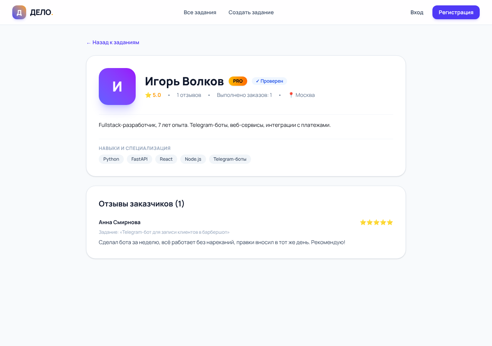
Профиль: аватар, роль, город и отзывы
ДЕЛО. Руководство пользователяСтр. 11
ДЕЛО.Профиль
Профиль и баланс
Раздел «Профиль» (ссылка в шапке) — ваш рабочий кабинет: данные, аватар, портфолио и кошелёк.
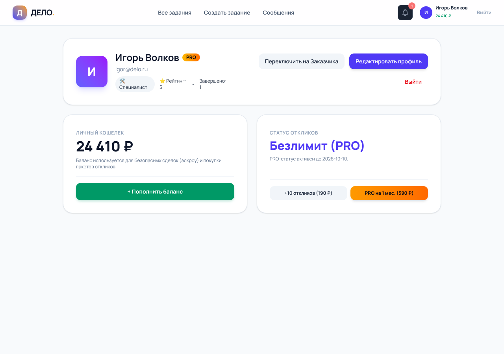
Профиль специалиста: баланс, аватар, портфолио и форма данных
Что заполнить
Имя — его видят заказчики;
Город и телефон — для связи;
Навыки — через запятую, станут штампами в профиле;
О себе — пара предложений об опыте;
Аватар и портфолио — фото работ загружаются файлами.
Баланс и оплата
Баланс нужен заказчикам для безопасной сделки: при назначении исполнителя сумма резервируется. Пополнение — кнопка «+» рядом с балансом: выберите сумму или введите свою.
Специалистам Заработанное автоматически зачисляется на баланс после завершения заказа.
ДЕЛО. Руководство пользователяСтр. 12
ДЕЛО.Мобильная версия · Вопросы
На телефоне и частые вопросы
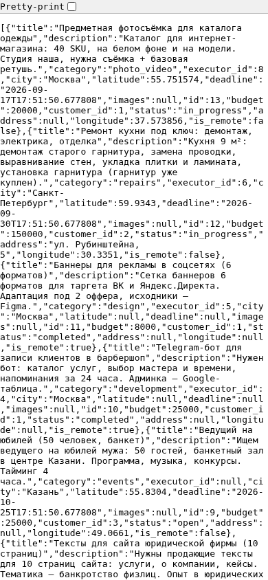
Мобильная версия: всё то же, в один столбец
Сайт полностью адаптивен: поиск, фильтры, отклики, чат и профиль работают со смартфона без установки приложений.
Частые вопросы
Вопрос
Ответ
Сколько стоит?
Регистрация и отклики бесплатны. Комиссия сервиса не взимается.
Как поменять роль?
Роль задаётся при регистрации. Для смены создайте новый аккаунт.
Почему лента пуста?
Слишком строгие фильтры или заказов пока нет. Сбросьте фильтры.
Где мои уведомления?
Колокольчик в шапке сайта.
Забыл пароль
Обратитесь к администратору сервиса для сброса пароля.
Поддержка
Вопросы и предложения — администратору сервиса. Приятной работы! Сделай дело.
ДЕЛО. Руководство пользователя · Версия 1.0Стр. 13